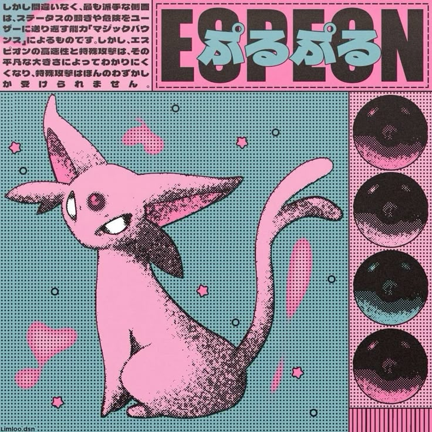
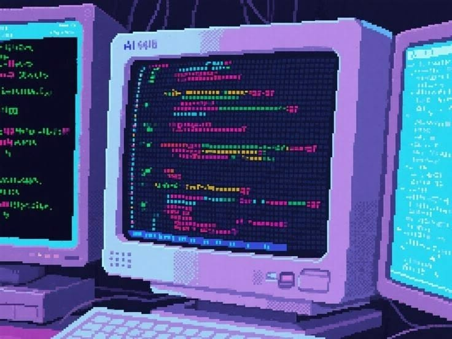
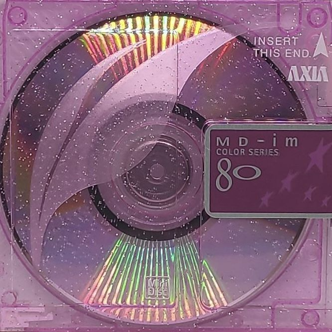
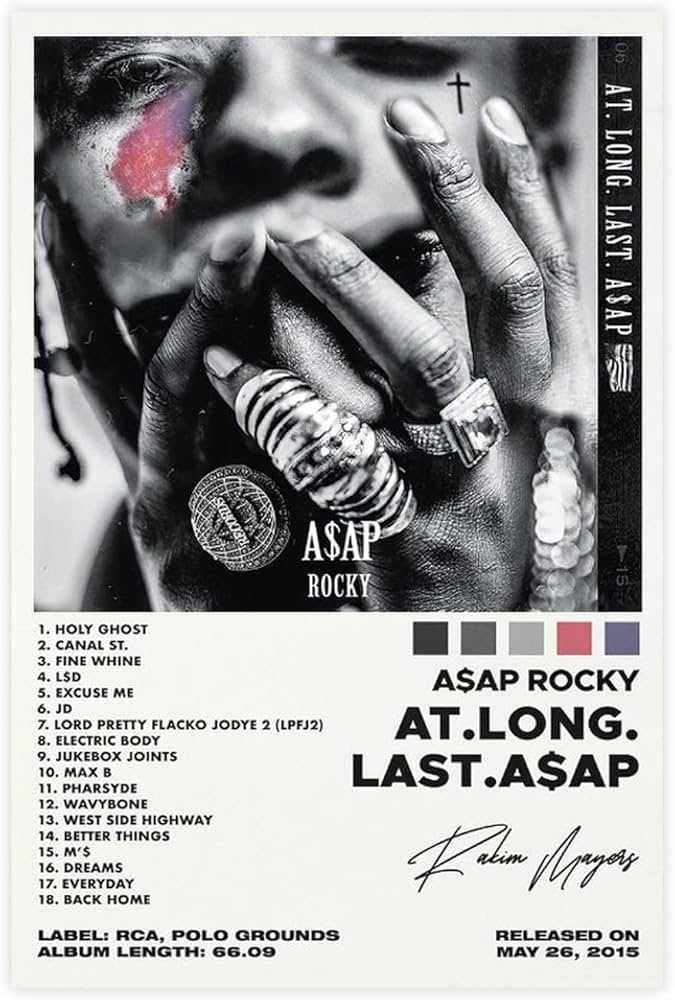
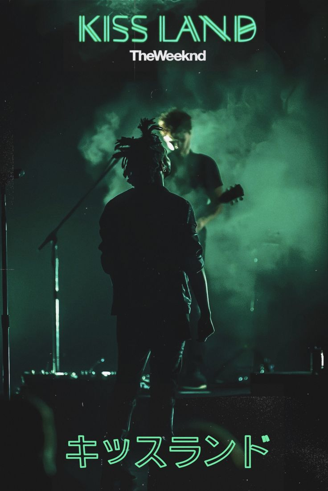
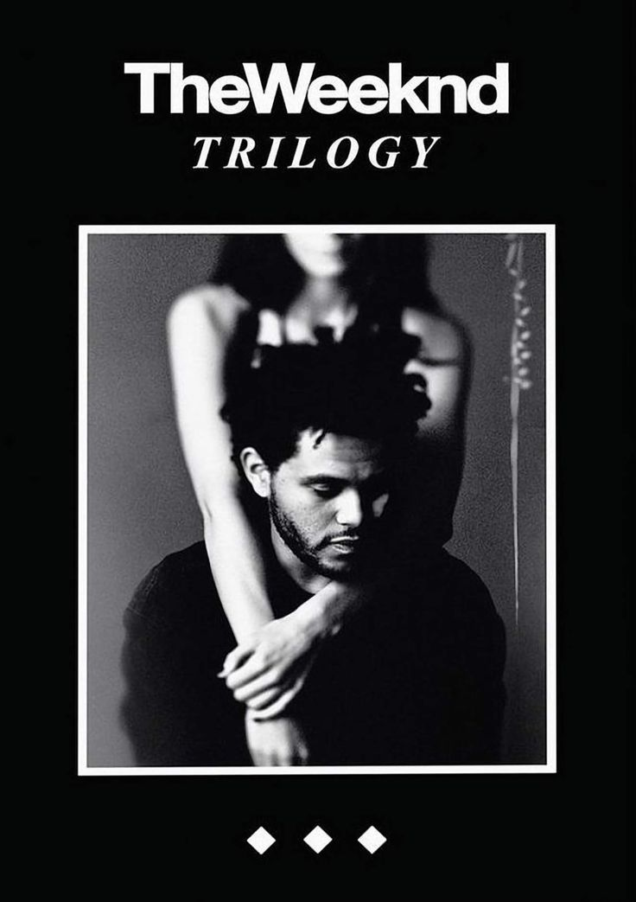
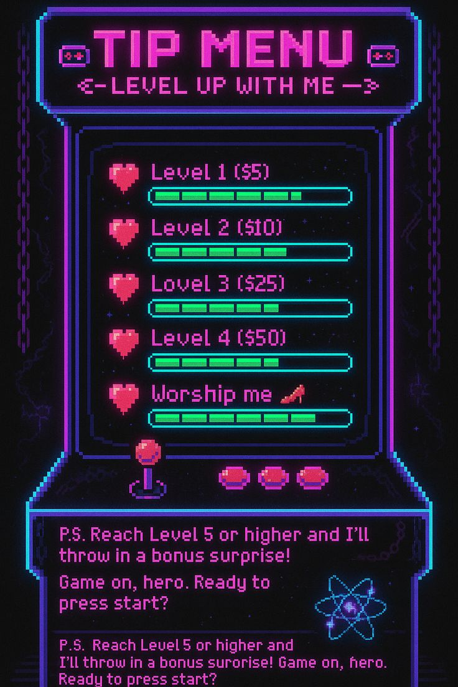

Ornament
Gilding, painted ceilings, pearls, shells and embroidered surfaces bring richness and history.
A PERSONAL TASTE PORTFOLIO
Images, music, objects and ideas that catch my eye. A living portrait, assembled one detail at a time.
Enter the visual archive01 / VISUAL ARCHIVE
A first map of the visual world I’m drawn to: ornament, playful interfaces and places that feel imagined.



02 / FILM
Film worlds, faces and scenes that stay with me long after the credits.
A collection of films is taking shape.
03 / TELEVISION
Series, characters and imagined worlds that stay with me between episodes.
A collection of shows is taking shape.
04 / MUSIC
Records, voices and sounds I return to, and the worlds they leave behind.






05 / FORM & TEXTURE
Small things with a presence: materials, patterns, interiors and the details that make a place feel alive.

06 / THE VISUAL LANGUAGE
The collection’s mix makes sense when each influence has its own role.
Gilding, painted ceilings, pearls, shells and embroidered surfaces bring richness and history.
CRT glow, tiny characters and pixel menus make the archive feel interactive and alive.
Layered hills, vivid water and dreamlike places turn the collection into somewhere to explore.

07 / ABOUT THIS SPACE
Curator gathers the images, sounds, objects and ideas worth returning to. It treats taste as something discovered by noticing: a personal collection that can change, contradict itself and keep growing.